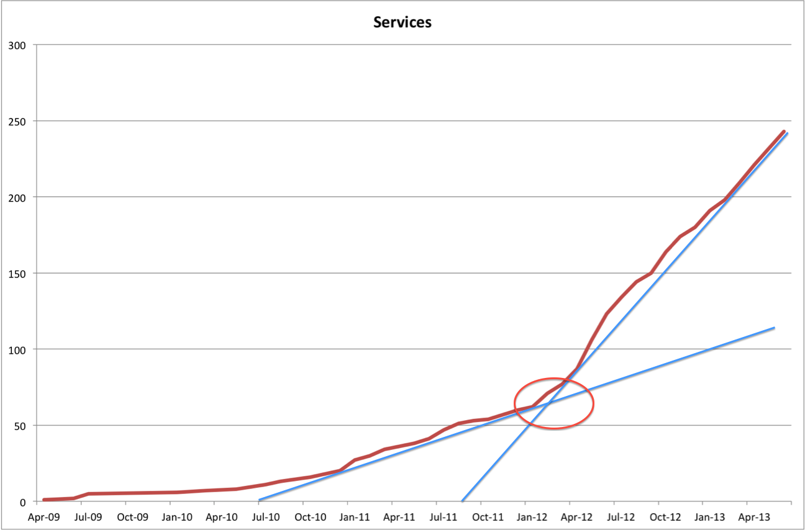

Gilt @ FutureStack
Immutable Deployment Platforms and Continous Delivery ...
... Friends or Foes?
October 2013
VP Infrastructure Engineering
About the Talk
- Why? - Motivation, Background, History
- What? - Architecture
- How? - Implementation
About Gilt
About Gilt
About Gilt
| 6 - Years | 750 - Million |
| 150 - Developers | 10 - System Engineers |
| 1 - Million | 18 - Minutes |
About the Spike

About the Spike
About the Trinity
About the Trinity
About the Mission
Build and run infrastructure ...
... that will allow Gilt to deliver on a 100% uptime record ...
... while allow Gilt to innovate at the highest rate possible ...
... and do all of that as cost-effective as possible.
About the Roland
About the Roland
Why?
- Motivation - Innovation! Velocity!
- Background - All-Ops & Zero-Waiting!
- History - Immutability!
Why? - History
Why? - History
- 5 years ago - 20 engs, 20 servers, Ruby on Rails
- 2 years ago - 150 engs, 150 servers, Java and ... Scala!!!
- 1 year ago - Immutable Servers! Galactica!
Why? - Right now
Why? - Right now
Why? - Right now
 |
What?
- Gilt Architecture!
- Galactica Architecture!
- Updating a service!
How?
How?

Wrap-up
Gilt is investing to build ...
- ... a continous delivery/deployment platform and ...
- ... an immutable HW/SW-provisioning platform and ...
- ... continous analysis capabilities to continously assess the results of the deployments.